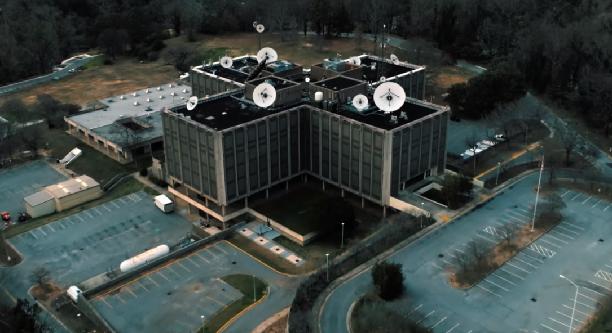

Секретная лаборатория Министерства энергетики США, где занимаются разработкой оружия (в том числе психологического) для борьбы с Советским Союзом — действие сериала разворачивается во время холодной войны. Именно там находятся врата в Обратную сторону.
Мать Одиннадцатой Терри Айвз была участницей секретной программы спецслужб «МК-Ультра», в рамках которой в лаборатории Хоукинса ставили эксперименты по контролю разума: участники принимали ЛСД и опускались в камеры сенсорной депривации. В этот период Айвз забеременела и родила дочку, которую она назвала Джейн. Девочка родилась с экстраординарными телепатическими и телекинетическими способностями. Директор лаборатории доктор Бреннер похитил Джейн, обставив так, будто у Айвз был выкидыш. Женщина пыталась судиться, но никаких доказательств у нее не было. А маленькая Джейн получила порядковый номер 11, вытатуированный у нее на руке.
Секретная лаборатория — одна из центральных локаций в сериале, поскольку именно там находятся врата в Обратную сторону. Рано или поздно в лаборатории оказываются почти все герои — здесь их запугивают, ими манипулируют, за ними ведут наблюдение. Здесь они оказываются заперты в ловушке, которую устроил им Теневой монстр, используя Уилла в качестве своего шпиона.
Закрыть лабораторию общими усилиями удается Нэнси Уилер, которой так и не удалось прийти в себя после смерти лучшей подруги. Она вместе с Джонатаном Байерсом с помощью обмана добивается от нового директора лаборатории Сэма Оуэнса признания, что гибель Барб связана с ошибкой ученых, записывает это на диктофон и отдает пленку детективу, в прошлом журналисту-расследователю Мюррею Бауману. Его статья в Chicago Sun-Times стала поводом для Министерства обороны закрыть лабораторию.